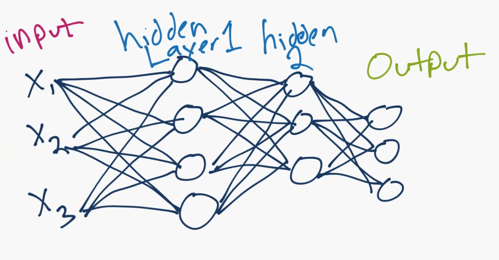

Welcome to a new section in our Machine Learning Tutorial series: Deep Learning with Neural Networks and TensorFlow. The artificial neural network is a biologically-inspired methodology to conduct machine learning, intended to mimic your brain (a biological neural network).
The Artificial Neural Network, which I will now just refer to as a neural network, is not a new concept. The idea has been around since the 1940's, and has had a few ups and downs, most notably when compared against the Support Vector Machine (SVM). For example, the Neural Network was popularized up until the mid 90s when it was shown that the SVM, using a new-to-the-public (the technique itself was thought up long before it was actually put to use) technique, the "Kernel Trick," was capable of working with non-linearly separable datasets. With this, the Support Vector Machine catapulted to the front again, leaving neural nets behind and mostly nothing interesting until about 2011, where Deep Neural Networks began to take hold and outperform the Support Vector Machine, using new techniques, huge dataset availability, and much more powerful computers.
This is why, if you plan to stick around in the field of machine learning, understanding the other models is fairly important, since tides can, and do, change. Now that we have machines capable of actually executing neural networks to scale, we have a somewhat interesting situation, since people have been sitting around pondering the subject for decades already. It's not a rare case that someone tries to publish a paper of research with neural networks, and some paper decades on that exact topic has already been written.
The model of the neural network is actually a very simple concept. The idea is to mimic a neuron, and, with a basic neuron, you have the dendrites, a nucleus, axon, and terminal axon.
Next, for a network, you need two neurons. Neurons transmit information via synapse between the dendrites of one and the terminal axon of another.
Okay, so that's how neurons are proposed to work. Now computer scientists come in think we got this. So we propose a model of an artificial neuron that looks like:
Done. So that's your neuron up close. Generally though, we simplify things further, and if you google images a neural network, you'll probably see something more like:
The circles are neurons or nodes, with their functions on the data and the lines connecting them are the weights/informating being passed along. Each column is a layer. The first layer of your data is the input layer. Then, unless your output is your input, you have at least one hidden layer. If you just have one hidden layer, then you have a regular artificial neural network. If you elect to have many hidden layers, boom, you have yourself a deep neural network. Wasn't that easy? ...Well at least in concept.
So with this model, you have input data, you weight it, and pass it through the function in the neuron. The function in the neuron is a threshold function, which is also called your activation function. Basically, is the sum of all of the values after the weighting above or below a certain value. If it is, then you fire a signal (1) out, or nothing is fired out (0). That is then weighted and passed along to the next neuron, and the same sort of function is run.
That's your neural network model. So what are the weights and thresholds? Well, to start, we get rid of the threshold "variable" thanks to Paul Werbos in 1974. Rather than dealing with the threshold as another variable to optimize, we take the threshold value, give it a weight of -1, and boom, the threshold is always at 0. No matter what the threshold is, it negatates itself, and always is a zero. We still have an ugly step function as the decision about whether or not the neuron fires a 0 or 1 can be messy. We decide to make that a sigmoid (s-shape) function of some kind instead.
As for the weights, they're just random to start, and they are unique per input into the node/neuron. Then, in a typical "feed forward" (your most basic type) neural network, you have your information pass straight through the network you created, and you compare the output to what you hoped the output would have been using your sample data. From here, you need to adjust the weights to help you get your output to match your desired output. The act of sending data straight through a neural network is called a feed forward neural network. Our data goes from input, to the layers, in order, then to output. When we go backwards and begin adjusting weights to minimize loss/cost, this is called back propagation.
This is a new optimization problem. Recall the Support Vector Machine optimization problem from a few tutorials ago, and how we explained that it was a nice convex optimization problem. Even though we had two variables, our optimization problem was a perfect bowl shape, so we both could know when we had reached optimization and also take huge steps along the way to make processing cheap. With the neural network, this isn't the case. In real practice, you're looking at something more like hundreds of thousands of variables, or millions, or more. The original solution here was to use stochastic gradient descent, but there are other options such as AdaGrad and the Adam Optimizer. Regardless, this is a massive computational task.
Now you can see why the Neural Network was mostly left on the shelf for over half a century. It was only very recently that we even had the power and architecture in our machines to even consider doing these operations, and the properly sized datasets to match. The good thing is though, we've had a half of a century to philosophize on the topic, and a lot of the work on the fundamentals has already been done, it just needs to be implemented and tested.
Interestingly enough, just as we don't fully understand the human brain, we don't really fully understand why or how neural networks actually achieve such interesting results. Through a lot of digging and analysis, we can demystify some things, but, due to many variables and dimensions, we actually don't really know much about what's going on, we just see good results and are happy. Even our first example will be extremely rudimentary in principle, yet will have staggeringly good results for what it is doing.
For simple classification tasks, the neural network is relatively close in performance to other simple algorithms, even something like K Nearest Neighbors. The real beauty in neural networks comes with much larger data, and much more complex questions, both of which put other machine learning models to shame. For example, current neural networks can do things like answer:
Jack is 12 years old. Jane is 10. Kate is older than Jane, and younger than Jack. How old is Kate?
The answer is 11, and a deep learning model can figure that out, without you somehow teaching it about how to actually do the logic part. You just simply pass the raw data in, which would be either words, or even characters, and the neural network does the rest. Oh, and you need millions of samples! By millions, I mean about half a billion for ideal accuracy.
Where do you get millions of samples of things? You have some options. One option with image data is ImageNet, which works much like wordnet in the organization of things. If you aren't familiar, you can poke around to get an idea. Everything there is free. Next, for text data, the very first stop should be something like the wikipedia data dumps. This is useful for more deep-learning tasks, not so much for labeled data. Next, for even more text data, why not go for a large portion of websites already crawled and parsed for you? If that sounds fun, check out CommonCrawl. This dataset is no joke, however, it's petabytes worth of data. For speech, I do not know many off the top of my head. One option is something like Tatoeba, which has both labeled and some translations even, which is pretty useful. When all else fails, you can try to create your own datasets, but the size requirements are fairly challenging. Also, you can always ask around. In my experience, there's a dataset for anything, you just have to find it. Many times, Google will fail you when trying to find the datasets, but people can help you. At the moment, you could try asking around in the Machine Learning subreddit, as probably 90% of what goes on there is neural network related, and everyone there needs to know about massive datasets.
It should be relatively obvious now why companies like Facebook and Google are so big into AI and neural networks especially. They actually possess the required volumes of data to do some very interesting things.
Now that we have that out of the way, how are we going to be working on neural networks? We're going to be using TensorFlow, which is a relatively new package from Google, still in beta at the time of my writing this. There are other packages used for machine learning like Theano or Torch, but they all work in similar ways. We really just need to pick one, and I choose Tensorflow. In the next tutorial, we're going to install TensorFlow. If you already have TensorFlow installed, you can skip the next tutorial (either use the side navigation bar, or just click to the next, scroll to the bottom, and click next again).